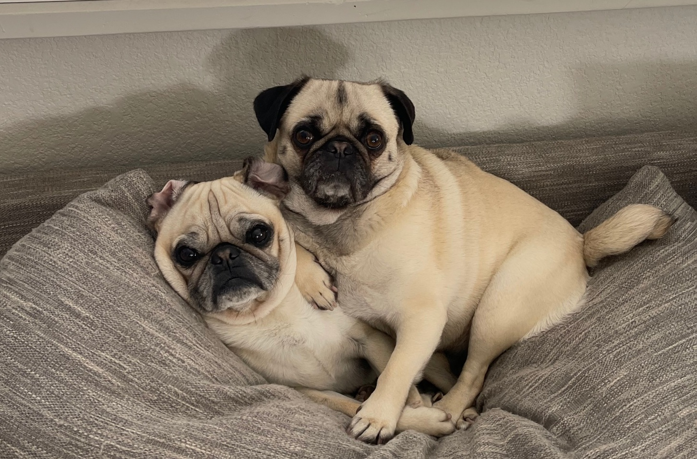

About Ringo the Spud
Ringo is shaped like a potato! He loves to sleep and hates to go outside when it's cold. Ringo also loves dinner time and misses Matt.
Ringo and his Sister
Spuds Fun Facts
- His tongue is too big for his mouth
- He barks at dogs on the tv
- He loves to play tug of war
Ringo's Brother and Sister
Ringo has one brother named Walter and a sister named Izzy. I think he would prefer to be an only puggy, but he loves them. Ringo's long lost brother is Matt. Click on the links below to learn more.